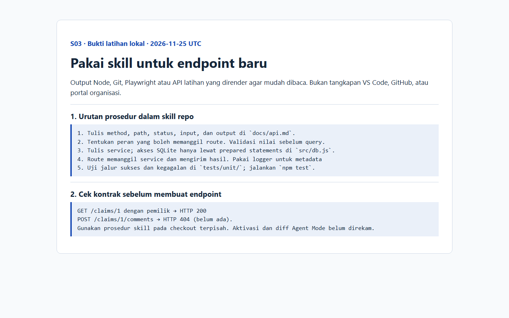

S03 · Level 1 — Inner loop
Pakai skill untuk endpoint baru
Gunakan prosedur new-endpoint: kontrak, validasi, service, logging, tes, dan docs.
Status latihan: manual pending · VS Code. Ikuti langkah · Ulangi dari awal.
Masalah yang dihadapi
Developer membangun route dengan cara berbeda; Yoga sulit membandingkan log.
Kerugian: Monitoring dan review jadi lebih lama.
Masalah pada baseline
src/routes/reports.js
Lihat potongan atau catatan sumber
res.json({ month, rows: db.report(month) }); // validasi ada, log belum adaSolusi dan alur
Gunakan prosedur new-endpoint: kontrak, validasi, service, logging, tes, dan docs.
- Temukan prosedur skill. Di Explorer buka .github/skills/new-endpoint/SKILL.md. Urutannya: kontrak → izin → service → route → tes. Bandingkan dengan src/routes/reports.js; validasi yang sudah ada jangan dihapus.
- Panggil skill lewat Agent Mode. Di checkout latihan klik Chat → Agent, kirim prompt. Pada baseline, GET detail klaim pemilik menghasilkan 200 sedangkan POST komentar menghasilkan 404.
- Cocokkan file dan perilaku. Buka Changes di Source Control dan docs/api.md berdampingan. Cari router, service, test untuk sukses dan akses ditolak, logger non-PII, dan kontrak docs. Screenshot diff hasil belum tersedia.
Langkah demo
Temukan prosedur skill
Di Explorer buka .github/skills/new-endpoint/SKILL.md. Urutannya: kontrak → izin → service → route → tes. Bandingkan dengan src/routes/reports.js; validasi yang sudah ada jangan dihapus.
.github/skills/new-endpoint/SKILL.md
Perbesar S03-local-result.pngOutput lokal yang dirender · bukan layar portal · Output pemeriksaan lokal S03: Urutan prosedur dalam skill repo; Cek kontrak sebelum membuat endpoint. Panggil skill lewat Agent Mode
Di checkout latihan klik Chat → Agent, kirim prompt. Pada baseline, GET detail klaim pemilik menghasilkan 200 sedangkan POST komentar menghasilkan 404.
Buat POST /claims/:id/comments memakai skill new-endpoint. Batasi akses ke klaim, validasi isi, dan jangan catat isi komentar ke log.Cocokkan file dan perilaku
Buka Changes di Source Control dan docs/api.md berdampingan. Cari router, service, test untuk sukses dan akses ditolak, logger non-PII, dan kontrak docs. Screenshot diff hasil belum tersedia.
npm test

Sebelum dan sesudah
S03-before.pngS03-after.png| Bagian | Sebelum | Sesudah / target |
|---|---|---|
| Perilaku | GET detail sudah ada; POST /claims/1/comments masih HTTP 404. | Target: POST dengan validasi dan pembatasan akses, tes dan kontrak docs. Belum diimplementasikan. |
| Bukti visual | Belum direkam. | Belum direkam. |
| Keputusan | Peserta membaca keadaan awal. | Manusia memeriksa hasil sebelum meneruskan. |
Manfaat
- Prosedur bisa dipakai berulang tanpa menyalin prompt panjang.
Bukti dan sumber
Template issue S03 · Data latihan dan pengukuran.
3 layar yang belum direkam
S03-before.pngS03-01-skill-loaded.pngS03-after.png
Ulangi latihan
Tinggalkan checkout yang sudah diedit dan buat checkout baru dari v0-baseline. Jangan pakai git reset --hard atau git clean pada direktori kerja bersama.
npm run reset -- --fresh